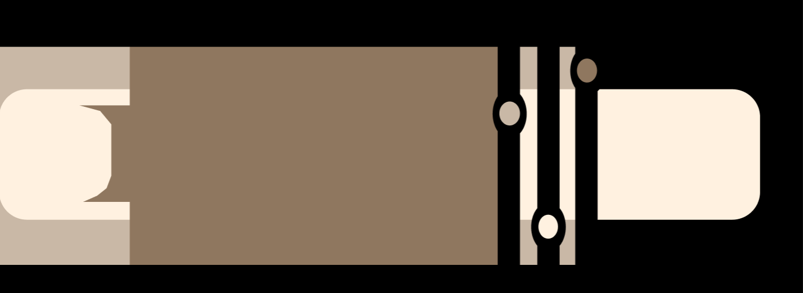

Learn More At https://typeset.djr.com/?ff=megascope
Megascope V2
History
The original ‘Megascope’ font by David Jonathan ross was inspired by the 1970s Art Deco styles, like Led Zepplin albums and other popular uses of typography from that time period. ‘Megascope’ was released in
February of 2023 as the ‘Font of the Month’. It was very popular and was used in places like Magazines and social media. In the first version of Megascope,
David Jonathan Ross admitsHe’s not very fond of Megascope’s thinner versions, because theylack legibility. However, due to the popularity of the original, he made a second version which is thinner.

"TYPE"
Megascope V2 is variable in ‘Scope’, which controls the size of type counters excluding the letter ‘O’. It also variates in Thickness, as well as the standard font size variation. Above are sliders for all 3. Megascope in all forms is a fashion-over-function Geometric sans serif designed for titles to stand out as much as possible with a retro feel and a very unique look. Megascope is meant for sparing use for the most important elements of a design.